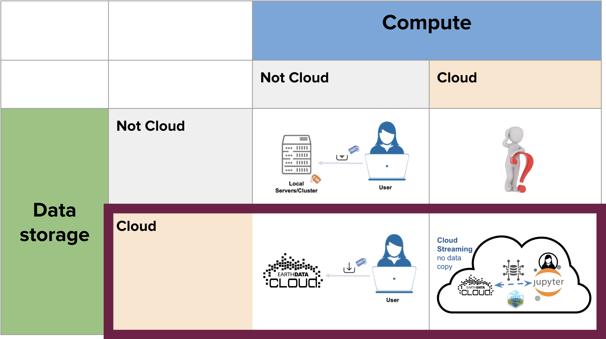

Fledging
Fledging is a goal of these JupyterHubs, so that users who have had success and want to continue their adventures in cloud computing, have the knowledge and resources to develop their own solutions. Fleding work to date has been co-developed with the NASA Openscapes Mentors community, and we continue to work with mentors in both NASA and NOAA to identify fledging paths and address challenges.
The Openscapes JupyterHubs aim to provide an analysis-ready computing environment, with all (or most) of the software dependencies required for working with cloud-hosted spatial data. This is a big advantage for learning how to access and work with the data, run workshops for many learners, and have early success in cloud computing. However, it does hide some of the complexities of setting up your computing environment, and most fledging paths will necessarily involve learning some of these tools and processes.
The Cloud: Data vs Compute
When thinking about cloud computing, we consider two components: where is our data? And where is our compute? In general, if our data is already on our local computer, we will work with that data on our computer, so the scope we are considering is how to work with data that is hosted in the cloud.

The proliferation of data centres to support cloud computing and data storage has a significant environmental cost. While most scientific workflows are small in comparison to other cloud uses (e.g., AI and cryptocurrency mining), it is worth taking this into consideration when thinking about “when to cloud”.
Skills learned for working with cloud-hosted data
The JupyterHubs provide a shared computing environment for mentors to learn and teach workflows for accessing and analyzing cloud-based data. Some of the skills we learn include:
- Conceptual understanding of data in the cloud, and cloud-native data sources
- Finding and accessing data in Earthdata cloud with earthaccess (Python) and earthdatalogin (R)
- Streaming and subsetting cloud data with xarray (Python) and terra/rstac (R)
- Authenticating with NASA Earthdata Login
- Ability to ask questions, teach, and develop learning resources
These skills enable efficient use of cloud-hosted data using either local or cloud compute resources.
What are fledging paths for compute?
Depending on computing needs and data size, there are many options for fledging. These may include:
- Continue compute in the cloud using a shared environment (example: JupyterHub)
- If your institution offers a JupyterHub instance, this is a great option to seamlessly transfer your learnings from the Openscapes Hub to a Hub for “real science”.
- Not all JupyterHubs will have the same environment (i.e., software and packages), so users will need to learn how to customize their new environment to suit their needs.
- Send large compute jobs to the cloud (example: Coiled)
- This is a good option for large compute jobs using Python that are easily parallelized (see an example below).
- Compute locally with cloud-native workflows (example: streaming cloud data with earthaccess + xarray)
- For data and analysis jobs that can fit within your laptop’s resrouces (RAM and hard disk), working locally with the same tools and workflows learned from working in the hub is a great option, and computing in the cloud is likely unnecessary. You can benefit greatly from the effiency of cloud data access patterns (such as streaming and range requests) without worrying about cloud costs and administration.
- Compute locally using a shared environment “container” (example: Docker)
- One of the great benefits that the shared JupyterHub offers is a computing environment that is already set up, so you don’t have to go through the pain of installing and configuring everything yourself. The images used in the JupyterHubs can often be used locally using tools like Docker. See some examples here.
An example path for computing in the cloud
from Aronne Merrelli, University of Michigan
- Learned when and how to cloud in 2i2c JupyterHub (managed by 2i2c & Openscapes, using NASA credits)
- Log into a computing environment in the Cloud. A single environment to teach and learn without having to know the complex setups
- Experimented with compute jobs in Coiled (managed by Coiled & Openscapes, NASA credits)
- Log into a computing environment in the Cloud
- Learned how to run code in parallel in the Cloud
- Did real science with University credit card (managed by Coiled & University credit card)
- UM’s institutional AWS account is a big help here
- Ran parallel compute jobs on big data in the cloud
- See a presentation on this fledging story, given at the Earth Science Information Partners (ESIP) conference in July, 2024.
Vision for the future
People have skills and are empowered to do their science with cloud-hosted data efficiently and equitably, based on their computing needs and their values.